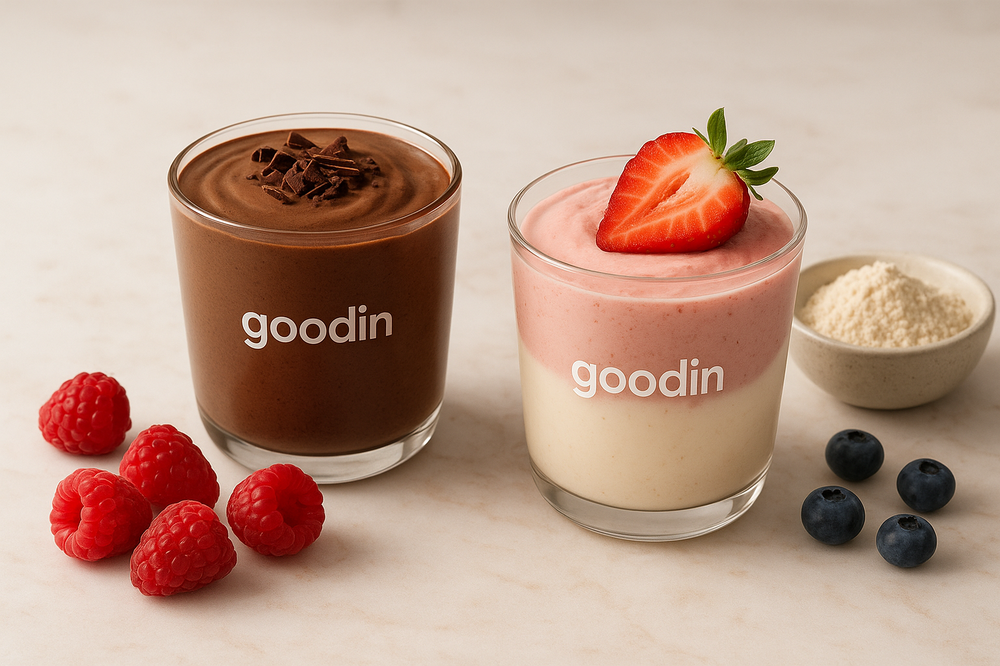

🍨 Comer Dulce Sin Culpa: La Nueva Forma de Cuidarte Sin Morirte en el Intento

Generada con IAEl Ciclo del Dulce Tradicional y el "Bajón"
Levanta la mano si has vivido el ciclo de "Quiero algo rico, ¡qué delicia!, ¡Uy, pero engorda!, ¡Mejor no!". Tranquilo, a todos nos pasa. Nos han enseñado que el dulce es el enemigo de la vida sana, y que para cuidarte, tienes que volverte un contador de calorías que vive a punta de pollo y lechuga.
El problema con la mayoría de los dulces tradicionales es su composición: son principalmente carbohidratos simples y azúcares refinados. Al consumirlos, tu cuerpo experimenta un rápido pico de glucosa, que te da una euforia instantánea (el "subidón de azúcar"). Inmediatamente después, el páncreas libera insulina para manejar ese exceso, lo que provoca una caída brusca de la energía. Ese es el famoso "bajón", que te deja cansado, irritable y con ganas de más dulce.
Pero la buena noticia es que esa regla se acabó. Gracias a los postres proteicos, la idea de "comer saludable" se ha puesto más fácil y, sobre todo, mucho más deliciosa. En Goodin queremos que te olvides de vivir contando y que empieces a vivir disfrutando.
¿Qué es un Postre Proteico y Por Qué Debería Importarte?
Un postre proteico no es solo un dulce al que le quitaron el azúcar. Es una comida completa que transforma el antojo en un aliado.
Imagina esto: En lugar de que tu dulce te dé un pico de energía que se cae a los cinco minutos, te da proteínas, vitaminas y energía estable.
¿Qué es en realidad? Es un postre hecho con ingredientes inteligentes. Reemplazamos azúcares refinados y harinas pesadas por fuentes de proteína de alta calidad (como el whey protein o proteínas vegetales), fibra y endulzantes naturales.
La Ciencia de la Satisfacción (Gracias a la Proteína)
La proteína es el macronutriente más saciante que existe. Cuando ingieres proteína, esta se digiere más lentamente que los carbohidratos, lo que tiene dos efectos cruciales:
- Estabiliza la Glucosa: Alenta la absorción de cualquier azúcar presente, manteniendo tus niveles de energía parejos y evitando los picos y caídas.
- Activa Hormonas de Saciedad: La proteína estimula la liberación de hormonas como el péptido YY (PYY) en tu intestino, que le indican a tu cerebro que estás lleno.
El resultado es el mismo sabor y placer, pero con un valor nutritivo que apoya tu cuerpo.
No es un castigo, es un upgrade a tu antojo.
Beneficios Reales para Gente Real (Tú y Yo)
Cuando hablamos de proteína, mucha gente piensa automáticamente en el gimnasio y los bíceps. ¡Error! Los postres proteicos son perfectos para cualquiera que lleve una vida "relajada" (o sea, una vida normal).
-
1. Energía que te dura (y te salva del hambre):
La proteína es el nutriente que más nos ayuda a sentirnos llenos. Si comes un postre proteico, esa proteína te da una saciedad más larga, ayudándote a evitar los snacks impulsivos y a controlar mejor tu peso sin esfuerzo.
-
2. No tienes que ser atleta para comer mejor:
La idea de que solo los deportistas necesitan proteína es vieja. Si eres una persona que trabaja, estudia, madruga o simplemente quiere sentirse con más energía, la proteína es vital. Ayuda a tu piel, a tus músculos (evitando la pérdida de masa magra con la edad) y a tu cerebro a funcionar mejor. Simplemente estás dándole a tu cuerpo combustible de mejor calidad.
-
3. Adiós a la Culpa y al Estrés Alimenticio:
Este es el beneficio más grande. Al saber que ese postre te está aportando cosas buenas (proteína, vitaminas) en lugar de solo calorías vacías, te liberas de la culpa. Es un momento de placer, no un sabotaje a tus metas. Es una elección consciente.
Goodin: El Nacimiento de un Antojo Inteligente
Goodin nació precisamente de esta idea: querer estar bien, pero también querer darse un gusto.
No creemos en dietas extremas ni en sacrificios absurdos. Creemos en el equilibrio real. Si puedes disfrutar de un postre que sabe delicioso y que, además, te ayuda a llegar a tus requerimientos de proteína y vitaminas, ¿por qué no hacerlo?
Es hora de cambiar el chip: el dulce no es un obstáculo, sino una herramienta.
Explora nuestra línea de postres proteicos y date cuenta de que cuidarte y disfrutar al mismo tiempo no es una fantasía, es simplemente elegir bien.